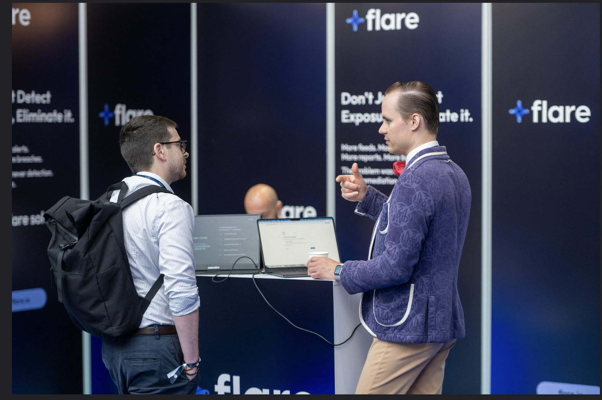

I turn noisy systems into decisions people can act on.
Twenty years in enterprise technology, the last five in pre-sales — leading proof-of-concepts, technical demos, and workshops that take customers from "we have a lot of data" to "we know exactly what to do next." Most recently across observability, automation, and cyber threat intelligence.

About
bioI've spent two decades moving between infrastructure, automation, and the sharp end of customer-facing technical work — from racking servers in a school district data centre to running proof-of-concepts for private banks and MSSPs across EMEA. What's stayed constant is the instinct to ask "how does this actually work" until the answer is useful to someone.
Day to day that means writing the PowerShell, DQL, or API integration that gets a customer from raw logs and telemetry to a KPI a business can act on — and doing it live, in front of a room, in English or French. Outside work, the same instinct shows up in a home lab full of IoT and clean-energy experiments, historical costume sewing, and a standing habit of hosting events and arguing the details of whatever's on the table.
Where I work
capabilitiesObservability & data
- Dynatrace platform, DQL, USQL
- Business observability & bizevents
- Logs, tracing, real user monitoring
- SQL / MySQL, JSON, XML, YAML
Automation
- Advanced PowerShell & PowerCLI
- Dynatrace Workflows, Azure Logic Apps
- CI/CD — Azure DevOps, Jenkins
- JS/TypeScript for workflow logic
Cyber threat intelligence
- Stealer logs, IOC objects, exposed secrets
- Initial access brokers & marketplaces
- Dynatrace application security
- Mapping exposure to business risk
Infrastructure
- Windows Server, Active Directory, Exchange
- Linux & Unix (Bash, BSD, Darwin, Solaris)
- VMware, Hyper-V, Kubernetes, Docker
- Palo Alto, Checkpoint, Juniper, Meraki
Cloud
- Azure & EntraID, Office 365
- AWS, GCP
- Google Workspace
- IoT device integration
Delivery
- End-to-end POC ownership
- Customer workshops & enablement
- RFI/RFP process leadership
- Bilingual EN/FR delivery
Experience
2012 — presentSolution Engineer (Bilingual FR/EN)
Primary technical point of contact across an 8–15 concurrent POC pipeline. Turned raw threat intelligence — leaked credentials, exposed infrastructure, infostealer infections — into business risk that closed deals across retail, banking, insurance, and MSSP accounts. Built the MSSP partner enablement course and represented Flare at FIC Lille, Insomni'hack, BSides Porto, and Ready for IT Monaco.
Solutions Engineer II
Grew maturity and consumption inside anchor-level accounts. Led DQL, business observability, and Logs/DEM training; wrote bespoke bizevents generators and automation to customise pitches. Drove RFI/RFP process across the SE team and mentored colleagues on best practice.
Solutions Engineer
Trusted advisor from demo through POC for midsize and enterprise customers, using IT data for business analytics and MTTR reduction, and closing deals on stacks other vendors couldn't solve.
Infrastructure Automation Engineer
Owned infrastructure DevOps strategy and delivery — PowerShell automation for audit compliance, CMDB discovery improvements, and Azure DevOps/Jenkins pipelines.
Earlier roles
Fourteen years across automation/integration engineering, infrastructure architecture, and service desk leadership in the US and UK — the full CV has the detail.